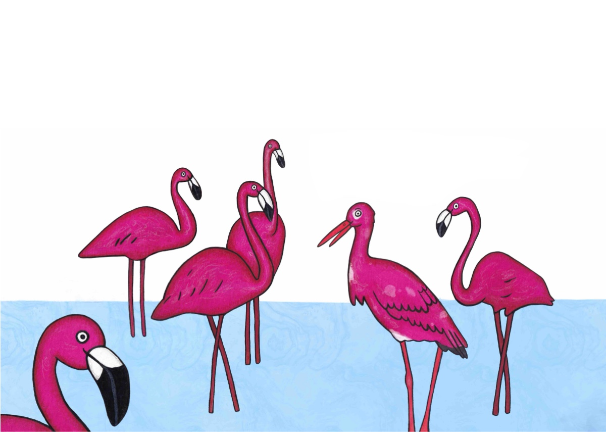
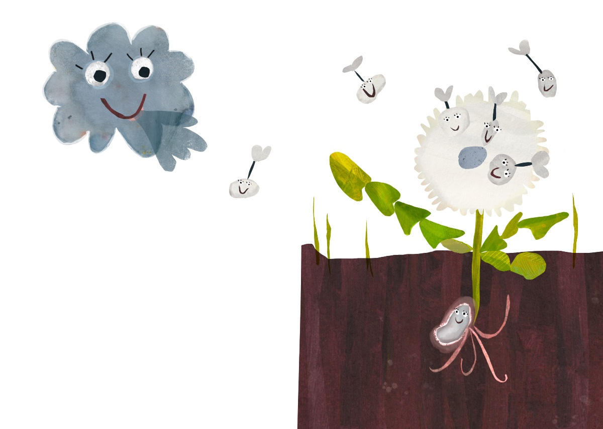
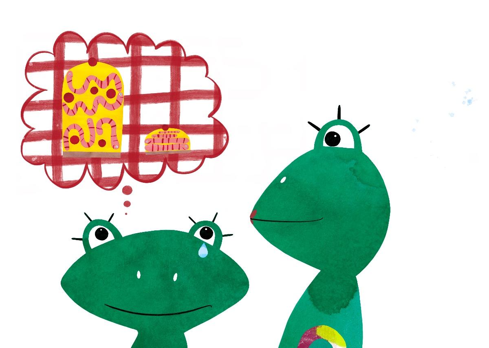

Portfolio


Illustration · Bilderbuch · Visuelles Storytelling
Ich illustriere poetische Geschichten über Gefühle, Zugehörigkeit und Veränderung. Meine Arbeiten verbinden klare Figuren, warme Farbwelten und erzählerische Bilder für Kinder.
Portfolio ansehen

Ein Bilderbuch über Identität und Freundschaft. Ein Storch versucht dazuzugehören, indem er sich wie Flamingos färbt – bis er entdeckt, dass echte Freundschaft nichts mit Aussehen zu tun hat.

Ein poetisches Bilderbuch über ein Samenkorn, das durch die Welt reist und schließlich einen Ort findet, an dem es wachsen kann.

Ein humorvolles interaktives Bilderbuch über den kleinen Frosch Fronko. Beim Drehen des Buches erleben Kinder Perspektivwechsel und eine Geschichte über Erwartungen und Liebe.
Ich bin Illustratorin und Psychotherapeutin. In meinen Arbeiten beschäftige ich mich mit emotionalen Themen, inneren Bildern und erzählerischen Figuren. Meine Illustrationen verbinden psychologische Perspektiven mit visuellen Geschichten für Kinder.
Für Bilderbuchprojekte, Illustrationen oder Kooperationen freue ich mich über eine Nachricht.